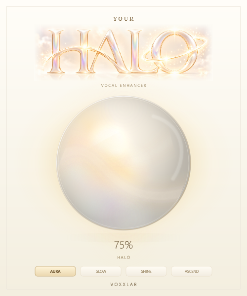

<!doctype html>
<html lang="en">
<meta charset="utf-8"><meta name="viewport" content="width=device-width,initial-scale=1">
<title>YOUR HALO — four-mode development review</title>
<style>
*{box-sizing:border-box}body{margin:0;background:#f4efe5;color:#715c3d;font-family:Segoe UI,Arial,sans-serif}main{max-width:1050px;margin:28px auto;padding:24px;display:flex;gap:40px;align-items:center}img{width:400px;max-width:100%;height:auto;box-shadow:0 20px 65px #89704b20}aside{flex:1;min-width:260px}h1{font:30px Georgia,serif;font-weight:400}p{font-size:14px;line-height:1.7}label{display:block;font-size:12px;letter-spacing:.06em;margin:18px 0 7px}select{padding:10px;background:#fffaf1;color:#715c3d;border:1px solid #d7c6a8;border-radius:6px}audio{width:100%;margin:8px 0 12px}a{color:#715c3d}small{font-size:12px;line-height:1.65;display:block;color:#96815f}@media(max-width:800px){main{flex-direction:column;margin:0 auto;gap:15px}aside{max-width:500px;width:100%}}
</style>
<main><aside>
<h1>Four ways to give a vocal its glow.</h1>
<p id="character">AURA: balanced leveling, presence and air, with smooth harmonic polish.</p>
<label for="mode">PROCESSING CHARACTER</label><select id="mode"><option>AURA</option><option>GLOW</option><option>SHINE</option><option>ASCEND</option></select>
<label for="amount">AUDIO EXAMPLE · HALO AMOUNT</label><select id="amount"><option>50</option><option>100</option></select>
<label>DRY REFERENCE</label><audio controls preload="metadata" src="Dry.wav"></audio>
<label id="wet-label">AURA · HALO 50%</label><audio id="wet" controls preload="metadata" src="AURA-50.wav"></audio>
<p><a href="Preview.html">Watch the 24-second fluid-light animation</a> · <a href="Report.md">DSP architecture and test report</a> · <a href="Loudness.csv">A/B measurements</a></p>
<small>These are reproducible 10-second synthetic vocal-like test signals with quiet and loud passages, not recordings of a singer. The WAVs retain their measured output gain; they are not loudness matched. Mode screenshots show HALO 75%, independently of the audio amount selector. Audition real vocals in your DAW before judging final sound quality.</small>
</aside></main>
<script>
'use strict';
const descriptions={AURA:'Balanced leveling, presence and air, with smooth harmonic polish.',GLOW:'Warmer body, richer saturation and stronger density with a gentler top end.',SHINE:'Cleaner, faster leveling with forward presence, open air and stronger harshness control.',ASCEND:'The strongest leveling and parallel density, with white-gold radiance, richer harmonics and the largest existing stereo-side enhancement.'};
const mode=document.querySelector('#mode'),amount=document.querySelector('#amount'),wet=document.querySelector('#wet');
function update(){wet.pause();wet.src=`${mode.value}-${amount.value}.wav`;document.querySelector('#wet-label').textContent=`${mode.value} · HALO ${amount.value}%`;document.querySelector('#character').textContent=`${mode.value}: ${descriptions[mode.value]}`;document.querySelector('#capture').src=`Mode-${mode.value}.png`}
mode.addEventListener('change',update);amount.addEventListener('change',update);
</script>
</html>
